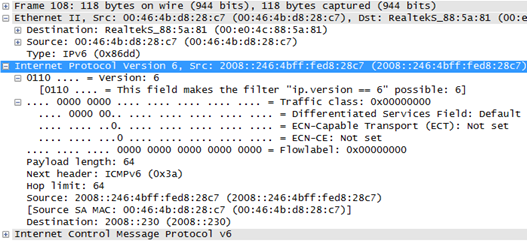

报文格式
图1 IPv6报文头格式

| 字段 | 长度 | 含义 |
|---|---|---|
| Version | 4比特 |
|
| Traffic class | 8比特 | 流量类别。该字段及其功能类似于IPv4的业务类型字段。该字段以区分业务编码点（DSCP）标记一个IPv6数据包，以此指明数据包应当如何处理。 |
| Flow Label | 20比特 | 流标签。该字段用来标记IP数据包的一个流，当前的标准中没有定义如何管理和处理流标签的细节。 |
| Payload length | 16比特 | 该字段表示有效载荷的长度，有效载荷是指紧跟IPv6基本报头的数据包，包含IPv6扩展报头。 |
| Next header | 8比特 | 下一报头，该字段指明了跟随在IPv6基本报头后的扩展报头的信息类型。 |
| Hop limit | 8比特 | 跳数限制，该字段定义了IPv6数据包所能经过的最大跳数，这个字段和IPv4中的TTL字段非常相似。 |
| Source Address | 128比特 | 该字段表示该报文的源地址。 |
| Destination Address | 128比特 | 该字段表示该报文的目的地址。 |
| Extension Headers | 可变 | 扩展报头。IPv6取消了IPv4报头中的选项字段，并引入了多种扩展报文头，在提高处理效率的同时还增强了IPv6的灵活性，为IP协议提供了良好的扩展能力。当超过一种扩展报头被用在同一个分组里时，报头必须按照下列顺序出现：
不是所有的扩展报头都需要被转发路由设备查看和处理的。路由设备转发时根据基本报头中Next Header值来决定是否要处理扩展头。 除了目的选项扩展报头出现两次（一次在路由扩展报头之前，另一次在上层扩展报头之前），其余扩展报头只出现一次。 |
报文示例
图2 IPv6报文
参考标准
| 标准Standard | Description |
|---|---|
| RFC 2460 | Internet Protocol, Version 6 (IPv6) Specification (Updated by RFC 7045, RFC 5871, RFC 5722, RFC 6935, RFC 7112, RFC 6437, RFC 6946, RFC 6564, RFC 5095) |